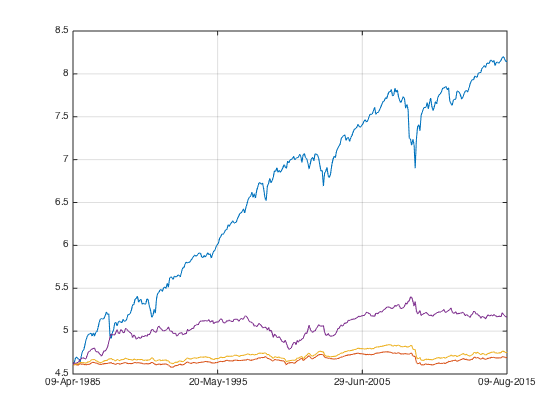

nion
nionMultiple Factors - BAB watch out for correlation
Multiple Factors - BAB
Risk adjusted sequential test is exactly what I need for BABs.
Contents
Load Data
Let's load the data from ..
load('../data_equity_list_us.mat'); load('../data_field_list.mat'); load('../data_historical_data_us.mat');
take data sample, load data & the list
index = datasample(1:1300,1000,'Replace',false);
px = fun_load_price(history_us, equity_list_us, index);
px = fun_clean_data(px);
list = equity_list_us(index,:);
load the Market Cap
beta_ts = fun_load_observations(history_us, equity_list_us, index,'beta');
let's take a look at the data
plot(beta_ts.dates,fts2mat(beta_ts));
datetick('x');
snapnow;

filtered by price
I can clean up the pb data for extreme value, but I prefer to leave it intact. Since we cleaned up price data, let's see what's the corresponding pb data looks like
beta_mat = fts2mat(beta_ts);
px_mat = fts2mat(px);
beta_mat(isnan(px_mat))=nan;
plot(beta_ts.dates,(beta_mat));
datetick('x');
Check signal.
let's check long low beta v.s. equal weight
score_beta_ts = -fun_calculate_score(beta_ts,list,'fullsort',px); portfolio_weight_ts = fun_portfolio_weight_sector_neutral(score_beta_ts,'longonlyeq'); portfolio_longonly_rt_ts = fun_portfolio_return(px, portfolio_weight_ts); portfolio_weight_ts = fun_portfolio_weight_sector_neutral(score_beta_ts,'equalweight'); portfolio_equalweight_rt_ts = fun_portfolio_return(px, portfolio_weight_ts);
let's check the result.
plot(cumsum(portfolio_longonly_rt_ts)); legend('off'); hold on; plot(cumsum(portfolio_equalweight_rt_ts)); legend('off'); snapnow; [sqrt(12)*std(fts2mat(portfolio_longonly_rt_ts(50:end))) sqrt(12)*std(fts2mat(portfolio_equalweight_rt_ts(50:end)))] [sqrt(12)*sharpe(fts2mat(portfolio_longonly_rt_ts(50:end)),0) sqrt(12)*sharpe(fts2mat(portfolio_equalweight_rt_ts(50:end)),0)]

ans =
0.1475 0.1931
ans =
0.6303 0.5734
low beta beats equal weight in risk adjusted basis.
score_beta_ts = -fun_calculate_score(beta_ts,list,'sectorsort',px); portfolio_weight_ts = fun_portfolio_weight_sector_neutral(score_beta_ts,'longonlyeq'); portfolio_longonly_rt_ts = fun_portfolio_return(px, portfolio_weight_ts); portfolio_weight_ts = fun_portfolio_weight_sector_neutral(score_beta_ts,'equalweight'); portfolio_equalweight_rt_ts = fun_portfolio_return(px, portfolio_weight_ts); plot(cumsum(portfolio_longonly_rt_ts)); legend('off'); plot(cumsum(portfolio_equalweight_rt_ts)); legend('off'); hold off; snapnow; [sqrt(12)*std(fts2mat(portfolio_longonly_rt_ts(50:end))) sqrt(12)*std(fts2mat(portfolio_equalweight_rt_ts(50:end)))] [sqrt(12)*sharpe(fts2mat(portfolio_longonly_rt_ts(50:end)),0) sqrt(12)*sharpe(fts2mat(portfolio_equalweight_rt_ts(50:end)),0)]
ans =
0.1587 0.1929
ans =
0.6179 0.5749
not very useful...
I know it's negative to go long short on beta, but i'm still curious..
score_beta_ts = -fun_calculate_score(beta_ts,list,'sectorsort',px); portfolio_weight_ts = fun_portfolio_weight_sector_neutral(score_beta_ts,'longshort'); portfolio_longshort_rt_ts = fun_portfolio_return(px, portfolio_weight_ts); portfolio_weight_ts = fun_portfolio_weight_sector_neutral(score_beta_ts,'equalweight'); portfolio_equalweight_rt_ts = fun_portfolio_return(px, portfolio_weight_ts); % let's check the result. plot(cumsum(portfolio_longshort_rt_ts)); legend('off'); hold on; plot(cumsum(portfolio_equalweight_rt_ts)); legend('off'); hold off; snapnow; [sqrt(12)*sharpe(fts2mat(portfolio_longshort_rt_ts(50:end)),0) sqrt(12)*sharpe(fts2mat(portfolio_equalweight_rt_ts(50:end)),0)] corrcoef(fts2mat(portfolio_longshort_rt_ts(1:end)), fts2mat(portfolio_equalweight_rt_ts(1:end)))

ans =
-0.4724 0.5749
ans =
1.0000 -0.7622
-0.7622 1.0000
Risk adjusted sequential test
let's do it properly
construct a benchmark
score_beta_ts = -fun_calculate_score(beta_ts,list,'sectorsort',px); portfolio_weight_eq_weight_ts = fun_portfolio_weight_sector_neutral(score_beta_ts,'equalweight'); portfolio_rt_ts = fun_portfolio_return(px, portfolio_weight_eq_weight_ts); benchmark = [100; 100*exp(fts2mat(cumsum(portfolio_rt_ts)))]; benchmark_ts = fints(px.dates, benchmark,'EqualWeightIndex'); plot(log(benchmark_ts)); legend('off'); hold on;

construct
portfolio_weight_ts = fun_portfolio_weight_sector_neutral(score_beta_ts,'topmlongonly',1); portfolio_cap_ts = fun_sequential_backtest_autoadjust(100, px, benchmark_ts, portfolio_weight_ts,false); plot(log(portfolio_cap_ts)); legend('off'); sqrt(12)*sharpe(fts2mat(tick2ret(portfolio_cap_ts)),0) corrcoef(fts2mat(tick2ret(portfolio_cap_ts)), fts2mat(tick2ret(benchmark_ts))) portfolio_weight_ts = fun_portfolio_weight_sector_neutral(score_beta_ts,'longonly'); portfolio_cap_ts = fun_sequential_backtest_autoadjust(100, px, benchmark_ts, portfolio_weight_ts,false); plot(log(portfolio_cap_ts)); legend('off'); sqrt(12)*sharpe(fts2mat(tick2ret(portfolio_cap_ts)),0) corrcoef(fts2mat(tick2ret(portfolio_cap_ts)), fts2mat(tick2ret(benchmark_ts))) portfolio_weight_ts = fun_portfolio_weight_sector_neutral(score_beta_ts,'topmlongonly',0.1); portfolio_cap_ts = fun_sequential_backtest_autoadjust(100, px, benchmark_ts, portfolio_weight_ts,false); plot(log(portfolio_cap_ts)); legend('off'); sqrt(12)*sharpe(fts2mat(tick2ret(portfolio_cap_ts)),0) corrcoef(fts2mat(tick2ret(portfolio_cap_ts)), fts2mat(tick2ret(benchmark_ts))) hold off; snapnow;
ans =
0.1223
ans =
1.0000 -0.3212
-0.3212 1.0000
ans =
0.1630
ans =
1.0000 -0.3498
-0.3498 1.0000
ans =
0.2811
ans =
1.0000 -0.3778
-0.3778 1.0000
 the signal is rather weak on risk adjusted basis... notice that the correlations is all large negative number. why doesn't risk adjustment doesn't work in those cases?
let's check on average portfolio beta
score_mat = fts2mat(score_beta_ts); beta_mat = fts2mat(beta_ts); beta_selected = beta_mat; beta_selected(score_mat<0.1)=nan; plot(beta_ts.dates,nanmedian(beta_mat,2)); hold on; plot(beta_ts.dates,nanmedian(beta_selected,2)); hold off; datetick('x'); snapnow; mean(nanmedian(beta_mat,2)) mean(nanmedian(beta_selected,2))
ans =
1.0063
ans =
0.7901
let's try beta neutral instead of risk neutral.
portfolio_weight_ts = fun_portfolio_weight_sector_neutral(score_beta_ts,'topmlongonly',0.1); portfolio_cap_ts = fun_sequential_backtest_partial(100, px, benchmark_ts, 0.65,portfolio_weight_ts,false); plot(log(portfolio_cap_ts(50:end))); legend('off'); hold on; plot(log(benchmark_ts(50:end))); legend('off'); hold off; sqrt(12)*sharpe(fts2mat(tick2ret(portfolio_cap_ts(50:end))),0) corrcoef(fts2mat(tick2ret(portfolio_cap_ts(50:end))), fts2mat(tick2ret(benchmark_ts(50:end))))
ans =
0.4071
ans =
1.0000 0.1093
0.1093 1.0000
using 0.65 heding ratio, i can achieve a zero correlated beta portfolio. sharpe in this case is significant.
Special property of BAB
the issue with low beta is even when I brought the index upto the same risk level with equal weighted benchmark, the corresponding factor portfolio is still negatively correlated with market. If I run correlation between the two:
portfolio_weight_ts = fun_portfolio_weight_sector_neutral(score_beta_ts,'longonly');
portfolio_cap_ts = fun_sequential_backtest_autoadjust(100, px, benchmark_ts,portfolio_weight_ts,true);
corrcoef(fts2mat(tick2ret(portfolio_cap_ts(50:end))), fts2mat(tick2ret(benchmark_ts(50:end))))
[sqrt(12)*sharpe(fts2mat(tick2ret(portfolio_cap_ts(50:end))),0) sqrt(12)*sharpe(fts2mat(tick2ret(benchmark_ts(50:end))),0)]
ans =
1.0000 0.9749
0.9749 1.0000
ans =
0.7131 0.6708
they are highly correlated, and the sharp is very close.
portfolio_cap_ts = fun_sequential_backtest_autoadjust(100, px, benchmark_ts,portfolio_weight_ts,false); sqrt(12)*sharpe(fts2mat(tick2ret(portfolio_cap_ts(50:end))),0) corrcoef(fts2mat(tick2ret(portfolio_cap_ts(50:end))), fts2mat(tick2ret(benchmark_ts(50:end)))) portfolio_cap_ts = fun_sequential_backtest_partial(100, px, benchmark_ts,0.75,portfolio_weight_ts,false); sqrt(12)*sharpe(fts2mat(tick2ret(portfolio_cap_ts(50:end))),0) corrcoef(fts2mat(tick2ret(portfolio_cap_ts(50:end))), fts2mat(tick2ret(benchmark_ts(50:end))))
ans =
0.1150
ans =
1.0000 -0.3508
-0.3508 1.0000
ans =
0.2709
ans =
1.0000 0.0080
0.0080 1.0000
Why is this so? if what I'm seeking to do is to find factors uncorrelated with market, then combine them togather, then I should use the second version, instead of the risk adjusted one. This is a special case for beta, as risk adjusted factor portfolio for SML and HML so far both has very low correlation with market.
Larger data set
load the big dataset
load('../Big Data/data_equity_list.mat'); load('../Big Data/data_historical_data_jan16.mat'); equity_list = equity_list(1:size(storage0,1),:); equity_list_us_large = equity_list(strcmp(equity_list(:,2),'US'),:); history_us_large = storage0(strcmp(equity_list(:,2),'US'),:); clear storage0; clear equity_list; equity_list_us_large = equity_list_us_large(not(cellfun(@isempty,history_us_large(:,1))),:); history_us_large = history_us_large(not(cellfun(@isempty,history_us_large(:,1))),:);
take data sample, load data & the list
index_large = datasample(1:8900,8001,'Replace',false);
px_large = fun_load_price_large(history_us_large, equity_list_us_large, index_large);
px_large = fun_clean_data(px_large);
list_large = equity_list_us_large(index_large,:);
load the beta ratios
beta_ts_large = fun_load_observations_large(history_us_large, equity_list_us_large, index_large,'beta');
calculate score
score_beta_ts_large = -fun_calculate_score(beta_ts_large,list_large,'sectorsort',px_large);
generate a benchmark
portfolio_weight_eq_weight_ts = fun_portfolio_weight_sector_neutral(score_beta_ts_large,'equalweight'); portfolio_rt_ts = fun_portfolio_return(px_large, portfolio_weight_eq_weight_ts); benchmark_large = [100; 100*exp(fts2mat(cumsum(portfolio_rt_ts)))]; benchmark_ts_large = fints(px_large.dates, benchmark_large,'EqualWeightIndex');
compare the two benchmark
plot(log(benchmark_ts_large)); legend('off'); hold on; plot(log(benchmark_ts)); legend('off');

show result
portfolio_weight_ts = fun_portfolio_weight_sector_neutral(score_beta_ts_large,'longonly'); portfolio_cap_ts = fun_sequential_backtest_autoadjust(100, px_large, benchmark_ts_large,portfolio_weight_ts,true); corrcoef(fts2mat(tick2ret(portfolio_cap_ts(50:end))), fts2mat(tick2ret(benchmark_ts_large(50:end)))) [sqrt(12)*sharpe(fts2mat(tick2ret(portfolio_cap_ts(50:end))),0) sqrt(12)*sharpe(fts2mat(tick2ret(benchmark_ts_large(50:end))),0)] plot(log(benchmark_ts)); legend('off'); hold on; plot(log(portfolio_cap_ts)); legend('off');
ans =
1.0000 0.9694
0.9694 1.0000
ans =
0.7764 0.6703

they are highly correlated, and the sharp difference is large then 1300 universe.
portfolio_cap_ts = fun_sequential_backtest_autoadjust(100, px_large, benchmark_ts_large,portfolio_weight_ts,false); sqrt(12)*sharpe(fts2mat(tick2ret(portfolio_cap_ts(50:end))),0) corrcoef(fts2mat(tick2ret(portfolio_cap_ts(50:end))), fts2mat(tick2ret(benchmark_ts_large(50:end)))) plot(log(portfolio_cap_ts)); legend('off'); portfolio_cap_ts = fun_sequential_backtest_partial(100, px_large, benchmark_ts_large,0.77,portfolio_weight_ts,false); sqrt(12)*sharpe(fts2mat(tick2ret(portfolio_cap_ts(50:end))),0) corrcoef(fts2mat(tick2ret(portfolio_cap_ts(50:end))), fts2mat(tick2ret(benchmark_ts_large(50:end)))) plot(log(portfolio_cap_ts)); legend('off'); hold off;
ans =
0.4232
ans =
1.0000 -0.2555
-0.2555 1.0000
ans =
0.5288
ans =
1.0000 0.0202
0.0202 1.0000
Conclusion: larger data set helps!
Lastly, let's run two percentile scan, one for large one for small.
top N for 8900
i=1; while i<=10 portfolio_weight_ts = fun_portfolio_weight_sector_neutral(score_beta_ts_large,'topmlongonly',0.1*i); portfolio_cap_ts = fun_sequential_backtest_partial(100, px_large(50:end), benchmark_ts_large(50:end),0.77, portfolio_weight_ts(50:end),false); portplot = plot(log(portfolio_cap_ts)); portplot.Color(4) = 1 - 0.1*i; hold on; sharpe_percentile(i) = sqrt(12)*sharpe(fts2mat(tick2ret(portfolio_cap_ts)),0); corr = corrcoef(fts2mat(tick2ret(portfolio_cap_ts)), fts2mat(tick2ret(benchmark_ts_large(50:end)))); correlation(i) = corr(1,2); i = i+1; end hold off; snapnow; plot(sharpe_percentile); snapnow; plot(correlation); snapnow;
top N for 1300
i=1; while i<=10 portfolio_weight_ts = fun_portfolio_weight_sector_neutral(score_beta_ts,'topmlongonly',0.1*i); portfolio_cap_ts = fun_sequential_backtest_partial(100, px(50:end), benchmark_ts(50:end),0.75, portfolio_weight_ts(50:end),false); portplot = plot(log(portfolio_cap_ts)); portplot.Color(4) = 1 - 0.1*i; hold on; sharpe_percentile(i) = sqrt(12)*sharpe(fts2mat(tick2ret(portfolio_cap_ts)),0); corr = corrcoef(fts2mat(tick2ret(portfolio_cap_ts)), fts2mat(tick2ret(benchmark_ts(50:end)))); correlation(i) = corr(1,2); i = i+1; end hold off; snapnow; plot(sharpe_percentile) snapnow; plot(correlation); snapnow;